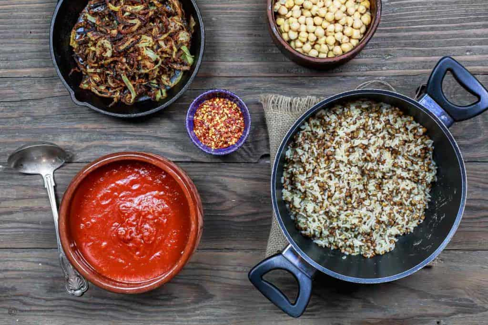

Koshari (also spelled, Kushari) is the national dish of my birthplace, Egypt. By far one of my favorite things to eat--EVER! No matter how far I've traveled, I will always crave a humble bowl of koshari as served in the streets of Egypt.
Koshri is another one of those genius solutions to using up pantry staples. It is a cousin to the Middle Eastern Mujadara. In a nutshell, it is a comforting bowl of simple pantry staples: spiced lentils and rice, combined with chickpeas and small pasta. All smothered in a tomato sauce that's been spiked with vinegar (out-of-this-world tasty, by the way!) Then...wait for it...it's topped with savory, crispy thin fried onion rings.
At home, koshari is served family-style with additional tomato sauce and crispy onion rings to pass! To complete the meal, I typically add a side of this quick 3- ingredient Mediterranean salad dressed simply in olive oil and lemon juice.
